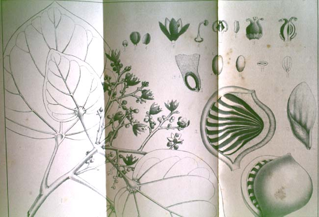

|
|  |
|
F. Freire Allemão, Terygotha brasiliensis
|
Relations between local institutions and governments in Argentina, Brazil, and Chile, and foreign scientists were often strained by disputes over collections harvested from the national soil, of which the new national museums were hardly ever able to obtain samples before they were embarked to Europe. In 1859, Brazil´s National Museum dispatched the first all-national expedition to the Amazonian interior of Pará state. Although results were mixed (some of the commissions, divided by discipline, returned fecer-ridden and almost empty-handed to Rio de Janeiro), the expedition compilated an important body of data that sparked scientific interest in the interior, including a study of Amerindian languages by the romantic poet Gonçalves Dias and a series of sketches and watercolours by Araújo Porto Alegre.
|